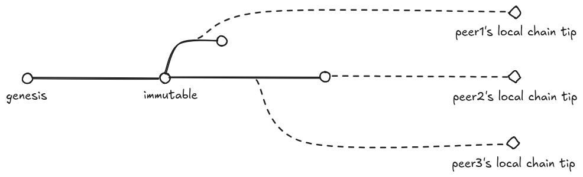
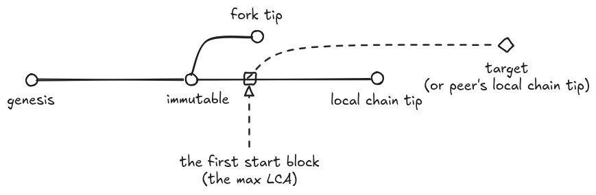
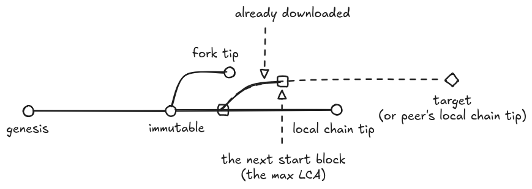
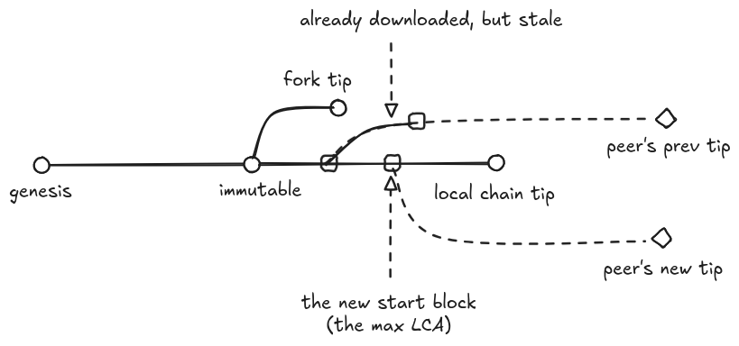
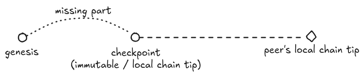
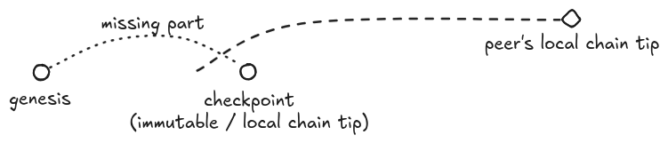
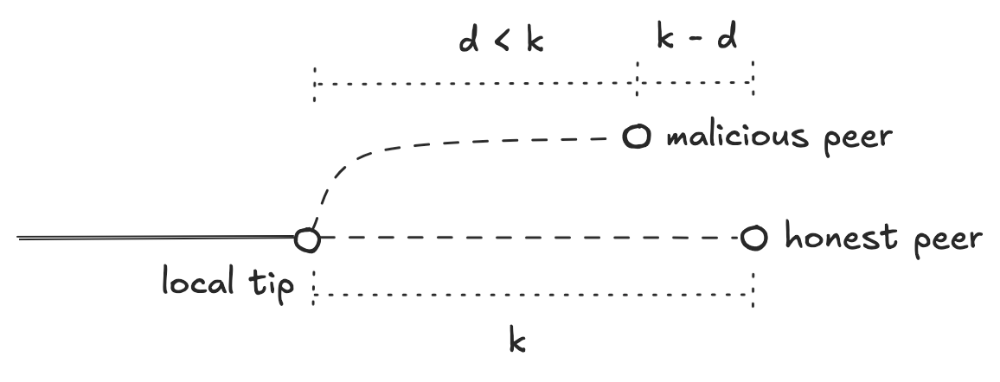
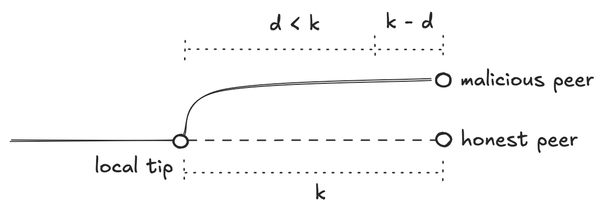

CRYPTARCHIA-BOOTSTRAPPING-SYNCHRONIZATION
| Field | Value |
|---|---|
| Name | Cryptarchia Bootstrapping & Synchronization |
| Slug | 96 |
| Status | raw |
| Category | Standards Track |
| Editor | Youngjoon Lee youngjoon@logos.co |
| Contributors | David Rusu david@logos.co, Giacomo Pasini giacomo@logos.co, Álvaro Castro-Castilla alvaro@logos.co, Daniel Sanchez Quiros daniel@logos.co, Filip Dimitrijevic filip@logos.co |
Timeline
- 2026-08-19 —
a2a85cb— RFC Bedrock: Cryptarchia with uncle references (#385) - 2026-07-03 —
709cf7f— Bedrock-RFC: Remove Concept of a Session (#365) - 2026-05-28 —
d45eed2— Chore: mirror blochain specs into github/mdbook (#347) - 2026-05-18 —
58b5698— chore(blockchain): migrate contributor emails to @logos.co (#338) - 2026-01-19 —
f24e567— Chore/updates mdbook (#262) - 2026-01-16 —
89f2ea8— Chore/mdbook updates (#258)
Revision History
| Version | Changes | Date |
|---|---|---|
| 1.0.0 | Initial revision. | 2026-02-17 |
| 1.0.1 | Noted that a streamed Block carries the signed headers of the uncles it references, which is what lets a synchronizing node validate those blocks and reproduce the Total Stake Inference without ever seeing their proposals, due to updated Cryptarchia Protocol (uncle references). | 2026-08-06 |
Introduction
When a new node joins the network or a previously-bootstrapped node has been offline for a while, it cannot follow the most recent honest chain solely by receiving only new blocks because those new blocks cannot be added to the block tree that does not have their parent block. These nodes must first catch up with the most recent honest chain by fetching missing blocks from their peers before they start listening for new blocks.
This document specifies a protocol for nodes to bootstrap with the honest chain efficiently while mitigating long range attacks. It also defines how to handle the case which the node falls behind after the bootstrapping is complete.
This protocol adheres to the key invariant: We never roll back blocks that are deeper than the latest immutable block in the local chain , as defined in Cryptarchia Protocol .
Overview
This protocol defines the bootstrapping mechanism that covers all of the following cases:
- From the Genesis block
- From the checkpoint block obtained from a trusted checkpoint provider
- From the local block tree (with newer than the Genesis and the checkpoint)
Additionally, the protocol defines the synchronization mechanism that handles orphan blocks while listening for new blocks after the bootstrapping is completed.
The protocol consists of the following key components:
- Determining the fork choice rule (Bootstrap Fork Choice Rule or Online Fork Choice Rule) at startup
- Switching the fork choice rule from Bootstrap to Online
- Downloading blocks from peers
The details are described in the Protocol. This section provides only a high-level overview.
flowchart TD
Start@{shape: circle, label: "Start"} --> SettingForkChoice
subgraph SettingForkChoice[Setting Fork Choice]
subgraph CheckBoostrap[Any condition true?]
direction TB
Cond1{{LIB is set to Genesis or Checkpoint?}}
Cond2{{Restarting after long offline?}}
Cond3{{Bootstrap flag enabled?}}
end
CheckBoostrap -->|Yes| SetBootstrap[ForkChoice=BOOTSTRAP]
CheckBoostrap -->|No| SetOnline[ForkChoice=ONLINE]
end
SetBootstrap --> IBD
SetOnline --> IBD
subgraph IBD[Initial Block Download]
IBDPeersConfigured{{IBD peers configured?}} --> |Yes|DownloadUpToTips
DownloadUpToTips[Download all blocks up to peers' tip] --> |"Failed (e.g. No peers available)"| Terminate@{shape: circle, label: "Terminate"}
end
IBDPeersConfigured --> |No|IsBootstrapRule
DownloadUpToTips -->|Completed|IsBootstrapRule
IsBootstrapRule{{ForkChoice==BOOTSTRAP?}}
IsBootstrapRule -->|Yes|StartBootstrapPeriod
IsBootstrapRule -->|Anyway|NewBlocks
subgraph Prolonged Bootstrap Period
StartBootstrapPeriod[Start ProlongedBootstrapPeriod timer: 24h] --> |Expired|SetOnlineAfterBootstrap[ForkChoice=ONLINE]
end
SetOnlineAfterBootstrap --> ProposeBlocks[Propose Blocks]
subgraph ListenNewBlocks[Listen for New Blocks]
NewBlocks[Listen/Process a new block] --> CheckOrphan{{Is orphan?}}
CheckOrphan -->|Yes| HandleOrphan[Download ancestors]
CheckOrphan -->|No| NewBlocks
HandleOrphan --> |Completed|NewBlocks
end
Upon startup, a node determines the fork choice rule, as defined in Setting the Fork Choice Rule. If the Bootstrap rule is selected, it is maintained for the Prolonged Bootstrap Period, after which the node switches to the Online rule.
Using the fork choice rule chosen, the node downloads blocks to catch up with the tip of the local chain of each peer.
After downloading is done, the node starts listening for new blocks. Upon receiving a new block, the node validates and adds it to its local block tree. If the ancestors of the block are missing from the local block tree, the node downloads missing ancestors using the same mechanism as above.
The node can propose blocks after switching to the Online fork choice rule.
Protocol
Constants
| Constant | Name | Description | Value |
|---|---|---|---|
| Offline Grace Period | A period during which a node can be restarted without switching to the Bootstrap rule. | 20 minutes | |
| Prolonged Bootstrap Period | A period during which Bootstrap fork choice rule must be continuously used after Initial Block Download is completed. This gives nodes additional time to compare their synced chain with a broader set of peers. | 24 hours | |
| Density Check Slot Window | A number of slots used by density check of Bootstrap rule. This constant is defined in Definitions. | (=4h30m) |
Setting the Fork Choice Rule
Upon startup, a node sets the fork choice rule to the Bootstrap rule in one of the following cases. Otherwise, the node uses the Online fork choice rule.
-
A node is starting with set to the Genesis block or from a checkpoint block. The node is setting its latest immutable block to the Genesis or a checkpoint, which clearly indicates that the node intends to catch up with the subsequent blocks. Regardless of how many subsequent blocks remain, the node should use the Bootstrap rule to mitigate long range attacks.
-
A node is restarting after being offline longer than (20 minutes). Unlike starting from Genesis or checkpoint, in the case where a node is restarted while preserving its existing block tree, the node must choose a fork choice rule depending on how long it has been offline.
If it is certain that a node has been offline longer than the offline grace period since it last used the Online rule, the node uses the Bootstrap rule upon startup. Otherwise, it starts with the Online rule.
Details of are described in Offline Grace Period. A recommended way how to measure the offline duration is introduced in Offline Duration Measurement.
-
A node operator set the Bootstrap rule explicitly (e.g., by
--bootstrapflag). In any case where the node operator is clearly aware that the node has fallen behind by more than blocks, they should be able to start the node with the Bootstrap rule. For example, the operator may obtain the latest block height from another trusted operator and realize that their node has fallen significantly behind due to some issue.
Initial Block Download
If peers for Initial Block Download (IBD) are configured, a node performs IBD by downloading blocks to catch up with the tip of the local chain of each peer using the fork choice rule chosen in Setting the Fork Choice Rule. If no peer is configured, the node skips IBD. For example, genesis nodes will configure no IBD peer because they have to build a chain from scratch.
Blocks are downloaded in parent-to-child order, as defined in the Downloading Blocks mechanism. This mechanism applies not only when a node starts from the Genesis block, but also when it already has the local block tree (or a checkpoint block)
def initial_block_download(peers, local_tree):
# Skip IBD if no peer is set.
# For example, genesis nodes should be able to skip IBD.
if len(peers) == 0:
return
# In real implementation, these downloadings can be run in parallel.
# Also, any optimization can be applied to minimize downloadings, such as grouping peers by tip.
num_success = 0
for peer in peers:
is_success = download_blocks(local_tree, peer, target_block=None)
num_success += 1 if is_success else 0
# If none of download succeeds (e.g. network errors or invalid blocks),
# IBD is considered failed.
if num_success == 0:
raise IBDFailure

The downloaded blocks are validated and added to the local block tree using the fork choice rule determined above. Both block headers and block bodies must be validated. The header validation rules are defined in Block Header Validation.
If the node fails to catch up with at least one IBD peer (e.g., network error or invalid blocks), the node is terminated with an error, allowing the operator to restart the node with other IBD peers.
If downloading is done successfully, the node starts listening for new blocks as described in Listening for New Blocks.
Prolonged Bootstrap Period
After Initial Block Download is completed, a node must maintain the Bootstrap fork choice rule during the Bootstrap Period , if the node chose the Bootstrap rule at Setting the Fork Choice Rule.
The purpose of the Prolonged Bootstrap Period is giving a syncing node additional time to compare its synced chain with a broader set of peers. In other words, it provides the node with an opportunity to connect to different peers and verify whether they are on the same chain. If the syncing node has downloaded blocks only from peers within an isolated network, the result of Initial Block Download may not reflect the honest chain followed by the majority of the entire network. To resolve such situations, the node should continue using the Bootstrap rule while discovering additional peers, allowing it to switch to a better chain if one is found.
Theoretically, the Bootstrap rule should be prolonged until the node has seen a sufficient number of blocks beyond the slot window, which is required for the density check of the Bootstrap rule to be meaningful. However, if the node has seen a fork longer than blocks from its divergence block during Initial Block Download, it means that the node has already seen more slots than with very high probability, considering the small size of ). If the node has never seen any fork longer than blocks, it means that all forks could have been handled by the longest chain rule, which is part of the Bootstrap rule. Therefore, this protocol does not explicitly wait slots after Initial Block Download. In other words, the protocol does not use to configure the Prolonged Bootstrap Period.
This protocol configures the Bootstrap Period to 24 hours.
A timer must be started when Listening for New Blocks is started after Initial Block Download is completed. Once the time is completed, the fork choice rule is switched to the Online rule.
Listening for New Blocks
Once Initial Block Download is complete and Prolonged Bootstrap Period is started, a node starts listening for new blocks relayed by its peers.
Upon receiving a new block, the node tries to validate and add it to its local block tree, as defined in Chain Maintenance.
If the parent of the block is missing from the local block tree, the block cannot be fully validated and added. These blocks are called orphan blocks. To handle an orphan block, the node downloads missing blocks from a randomly selected peer, as described in Downloading Blocks. If the request fails, the node may retry with different peers before abandoning the orphan block. The retry policy can be configured by implementers.
Note that downloading missing blocks does not need to be triggered if it is clear that the orphan block is in a fork diverged before the latest immutable (committed) block, as the node should never revert immutable blocks.
def listen_and_process_new_blocks(fork_choice: ForkChoice, local_tree: Tree, peers: List[Node]):
for block in listen_for_new_blocks():
try:
# Run the chain maintenance defined in the Cryptarchia spec.
local_tree.on_block(block, fork_choice)
except InvalidBlock:
continue
except ParentNotFound:
# Ignore the orphan block proactively,
# if it's clear that the orphan block is in a fork behind the latest immutable block
# because immutable blocks should never be revereted.
# This check doesn't cover all cases, but the uncovered cases will be handled by
# the Cryptarchia block validation during the `download_blocks` below.
if block.height ≤ local_tree.latest_immutable_block().height:
continue
# In real implemention, downloading can be run in background with the retry policy.
download_blocks(local_tree, random.choice(peers), target_block=block.id)
Downloading Blocks
For performing Initial Block Download and handling orphan blocks while Listening for New Blocks, a node sends a DownloadBlocksRequest to a peer, which must respond with blocks in parent-to-child order. This communication should be implemented based on the Libp2p streaming.
Libp2p Protocol ID
- Mainnet:
/logos-blockchain/cryptarchia/sync/1.0.0 - Testnet:
/logos-blockchain-testnet/cryptarchia/sync/1.0.0
class DownloadBlocksRequest:
# Ask blocks up to the target block.
# The response may not contain the target block if the responder limits the number of blocks returned.
# In that case, the requester must repeat the request.
target_block: BlockId
# To allow the peer to determine the starting block to return.
known_blocks: KnownBlocks
class KnownBlocks:
local_tip: BlockId
latest_immutable_block: BlockId
# Additional known blocks.
# A responder will reject a request if this list contains more than 5.
additional_blocks: list[BlockId]
class DownloadBlocksResponse:
# A stream of blocks in parent-to-child order.
# The max number of blocks to be returned can be limited by implementers.
# A requester can read the stream until the stream returns "NoMoreBlock".
blocks: Stream[Block | "NoMoreBlock"]
Each streamed Block carries the signed headers of the uncles it references, in its uncle_headers field (Block Construction, Validation and Execution). This is what lets a synchronizing node apply the validity rules of Uncle References to every downloaded block, and then reproduce the Total Stake Inference of every past epoch from the uncles those blocks carry, even though it never receives the proposals the blocks were reconstructed from.
The responding peer uses KnownBlocks to determine the optimal starting block for the response stream, aiming to minimize the number of blocks to be returned. The requesting node can include any block it believes could assist in this process to the KnownBlocks.additional_blocks. To avoid spamming responders, the size of KnownBlocks.additional_blocks is limited to 5.
The responding peer finds the latest common ancestor (i.e. LCA) between the target_block and each of the known blocks. Then, it returns a stream of blocks, starting from the highest LCA. To mitigate malicious downloading requests, the peer limits the number of blocks to be returned. The detailed implementation is up to implementers, depending on their internal architecture (e.g. storage design).

The requesting node should repeat DownloadBlocksRequests by updating the KnownBlocks in order to download the next batches of blocks. The following code shows how the requesting node can be implemented.
def download_blocks(local_tree: Tree, peer: Node, target_block: Optional[BlockId]):
latest_downloaded: Optional[Block] = None
while True:
# Fetch the peer's tip if target is not specified.
target_block = target_block if target_block is not None else peer.tip()
# Don't start downloading if target is already in local.
if local_tree.has(target_block):
return
req = DownloadBlocksRequest(
# If target_block is None, specify the current peer's tip each time when we build DownloadBlocksRequest,
# so that we can catch up with the most recent peer's tip.
target_block=target_block,
known_blocks=KnownBlocks(
local_tip=local_tree.tip().id,
latest_immutable_block=local_tree.latest_immutable_block().id,
# Provide the latest downloaded block as well
# to avoid downloading duplicate blocks
additional_blocks=[latest_downloaded.id] if latest_downloaded is not None else [],
)
)
resp = send_request(peer, req)
for block in resp.blocks():
latest_downloaded = block
try:
# Run the chain maintenance defined in the Cryptarchia spec.
local_tree.on_block(block)
# Early stop if the target has been reached.
if block == req.target_block:
break
except:
return
If the node is continuing from a previous DownloadBlocksRequest, it is important to include the latest downloaded block to the KnownBlocks.additional_blocks to avoid downloading duplicate blocks.

If the requesting node is downloading blocks up to the peer’s tip (e.g. Initial Block Download) by repeating DownloadBlocksRequests, the may switch between requests. The algorithm described above also handles this case by specifying the most recent peer’s tip each time when a DownloadBlocksRequest is constructed.

Proposing New Blocks
Unlike Listening for New Blocks, a node can start proposing blocks after Prolonged Bootstrap Period is complete. In other words, the node should not propose blocks before switching to the Online fork choice rule.
Bootstrapping from Checkpoint
Instead of bootstrapping from the Genesis block or from the local block tree, a node can choose to bootstrap the honest chain starting from a checkpoint block obtained from a trusted checkpoint provider. In this case, the node fully trusts the checkpoint provider and considers blocks deeper than the checkpoint block as immutable (including the checkpoint block itself).
A trusted checkpoint provider exposes a HTTP endpoint, allowing nodes to download the checkpoint block and the corresponding ledger state. The details are defined in Checkpoint Provider HTTP API.
The bootstrapping node imports the downloaded checkpoint block and ledger state before starting bootstrapping. The imported checkpoint block is used as the latest immutable block and the local chain tip . Starting from the checkpoint block, the same Initial Block Download is used to downloads blocks up to the tip of the local chain of each peer. As defined in Setting the Fork Choice Rule, the Bootstrap fork choice rule must be used upon startup.

If it turns out that none of the peers’ local chains are connected to the checkpoint block, the node is terminated with an error, allowing the node operator to select a new checkpoint.

Details
Offline Grace Period
The offline grace period is a period during which a node can be restarted without switching to the Bootstrap rule.
This protocol configures to 20 minutes. Here are the advantages and disadvantages of a short period:
-
Advantages
- Limits chances for malicious peers to build long alternative chains beyond the scope of the Online rule.
- Conservatively enables the Bootstrap rule to handle long forks.
-
Disadvantages
- Even a short offline duration can too sensitively trigger the Bootstrap rule, which then lasts for the long Prolonged Bootstrap Period.
The following example explains why should not be set too long.
-
A local node stopped in the following situation. A malicious peer is building a fork which is now a little shorter () than the honest chain.

-
The local node has been offline shorter than and just restarted. As defined in this protocol, the Online fork choice rule is used because the offline duration is short.
-
During the offline duration, the malicious peer made its fork longer by adding blocks. Now the fork is in the same length as the honest chain.
-
If the malicious peer sends the fork to the restarted node faster than the honest peer, the restarted node will commit to the fork because it has new blocks. Even if the node later receives the honest chain from the honest peer, it cannot revert blocks that are already immutable.

-
If is short, the malicious peer would not have enough time to make its fork acceptable by the Online rule. Even if the malicious peer made its fork long enough after , the fork will be rejected by the syncing node because it will use the Bootstrap rule if it has been offline longer after .
A disadvantage is that a syncing node, which has been offline longer than , should maintain the Bootstrap rule during the Prolonged Bootstrap Period, which is 24 hours in the current setting. In the future, the team will consider designing a better mechanism to replace the long Bootstrap Period.
Offline Duration Measurement
As defined in Setting the Fork Choice Rule, when a node is restarted, it should be able to choose a proper fork choice rule depending on how long it has been offline since it last used the Online rule.
It is considered unsafe to rely on any external information (e.g. the slot or height of peer’s tip) to check how long the node has been offline, since such information could be manipulated as an attack vector. Instead, it is recommended to employ a local method to measure the offline duration.
While the specific implementation is left to the discretion of implementers, one approach is for the node to periodically record the current time to a local file while it is running with the Online fork choice rule. Upon restart, it can use this timestamp to calculate how long it has been offline.
Checkpoint Provider HTTP API
A trusted checkpoint provider serves the GET /checkpoint API, allowing users (which are not connected via p2p) to download the latest checkpoint block and its corresponding ledger state.
openapi: 3.0
paths:
/checkpoint
get:
responses:
'200':
description: OK
content:
multipart/mixed:
schema:
type: object
properties:
checkpoint_block:
type: string
format: binary
checkpoint_ledger_state:
type: string
format: binary